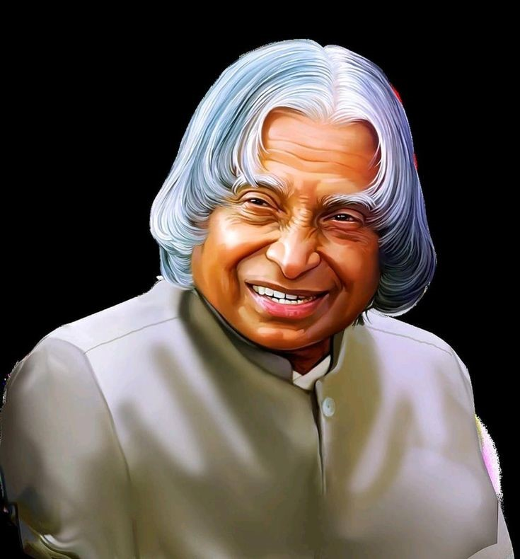

Missile Man of India | Former President of India

Dr. A.P.J. Abdul Kalam was born on October 15, 1931, in Rameswaram, Tamil Nadu. He was an aerospace scientist and served as the 11th President of India from 2002 to 2007. He played a key role in India's missile development programs and was popularly known as the "Missile Man of India". He inspired millions of students with his vision and simplicity.